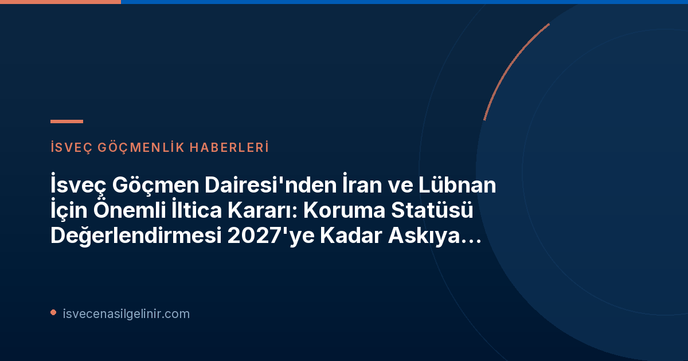

Migrationsverket'ten İran ve Lübnan'daki Durum Hakkında Güncel Değerlendirme
İsveç Göçmen Dairesi, İran ve Lübnan'daki mevcut durumu yakından takip ettiğini ve her iki ülkedeki gelişmelerin hala değişken ve değerlendirilmesi zor olduğunu belirtiyor. Bu belirsizlik ortamı, Migrationsverket'in bu ülkelerden gelen kişilerin koruma ihtiyaçlarına yönelik ileriye dönük sağlam bir değerlendirme yapmasını engelliyor. Bu nedenle, uluslararası koruma başvurularında ret kararı verilmemesi yönündeki tavsiye devam ediyor.
Kararın Arka Planı ve Süreç
Migrationsverket, İran'daki gelişmeler ışığında 14 Ocak 2026 tarihinde bu ülkeden gelen sığınmacılar için ret kararlarının ertelenmesi tavsiyesini uygulamaya koymuştu. Lübnan için de benzer bir tavsiye 6 Mart 2026 tarihinde yürürlüğe girmişti. Her iki tavsiye de uzatmalarla birlikte en son 12 Ekim 2026 tarihine kadar geçerliydi.
Ancak, devam eden belirsizlikler nedeniyle, Göçmen Dairesi bu duraklamanın uzatılmasına karar verdi. Bu kararın temel nedeni, İran ve Lübnan'daki durumun hala öngörülemez olması ve koruma ihtiyacının belirlenmesi için yeterince güvenilir veri bulunmamasıdır. Bu, başvuru sahipleri için hukuki süreçlerin seyrini doğrudan etkileyen önemli bir faktördür.
Önemli Tarihler ve Kararlar
| Ülke | İlk Askıya Alma Tavsiyesi Başlangıcı | Önceki Uzatma Sonu | Yeni Askıya Alma Tavsiyesi Sonu |
|---|---|---|---|
| İran | 14 Ocak 2026 | 12 Ekim 2026 | 12 Şubat 2027 (en geç) |
| Lübnan | 6 Mart 2026 | 12 Ekim 2026 | 12 Şubat 2027 (en geç) |
Bu kararlar, ilgili ülkelerden gelen iltica başvurularının sonuçlandırılmasında gecikmelere yol açabilir. İsveç Vatandaşlık Sınavı hakkında bilgi almak için web sitemizi ziyaret edebilirsiniz.
İran ve Lübnan'dan Gelen Başvuru Sahipleri İçin Ne Anlama Geliyor?
Bu yeni tavsiye, İran ve Lübnan'dan gelen uluslararası koruma başvurularında ret kararı verilmesinin 12 Şubat 2027 tarihine kadar askıya alınmaya devam edeceği anlamına geliyor. Bu durum, başvuru sahipleri için belirsizliğin bir süre daha devam edeceği ancak aynı zamanda ret riskinin bu dönem için ortadan kalktığı anlamına da gelmektedir. Migrationsverket, durumun değişmesi halinde daha erken yeni tavsiyelerde bulunabileceğini de belirtmiştir.
Bu süreçte başvuru sahiplerinin güncel duyuruları takip etmeleri ve gerekli hukuki danışmanlığı almaları büyük önem taşımaktadır. İsveç'teki göçmenlik süreçleri ve yasal haklar konusunda daha fazla bilgi edinmek, başvuruların doğru yönetilmesi için kritik bir adımdır. İsveç'teki yaşam ve entegrasyon süreçleriyle ilgili kaynaklara ulaşmak için sverigemedborgarskapsprov.com adresini ziyaret edebilirsiniz.
Gelecek Perspektifi ve Migrationsverket'in Takibi
Migrationsverket, her iki ülkedeki gelişmeleri çok yakından takip etmeye devam ediyor. Durumun herhangi bir şekilde değişmesi halinde, Göçmen Dairesi'nin mevcut tavsiyelerini daha erken gözden geçirme ve yeni kararlar alma yetkisi bulunmaktadır. Bu nedenle, ilgili kişilerin Migrationsverket'in resmi kanallarını düzenli olarak kontrol etmeleri tavsiye edilir.
İsveç'te Göçmenlik ve İltica Süreçleri Hakkında Daha Fazla Bilgi Edinin
İsveç'e göç etme, iltica başvuruları, vatandaşlık süreçleri ve daha fazlası hakkında güncel ve güvenilir bilgilere ulaşmak için kaynaklarımızı keşfedin.